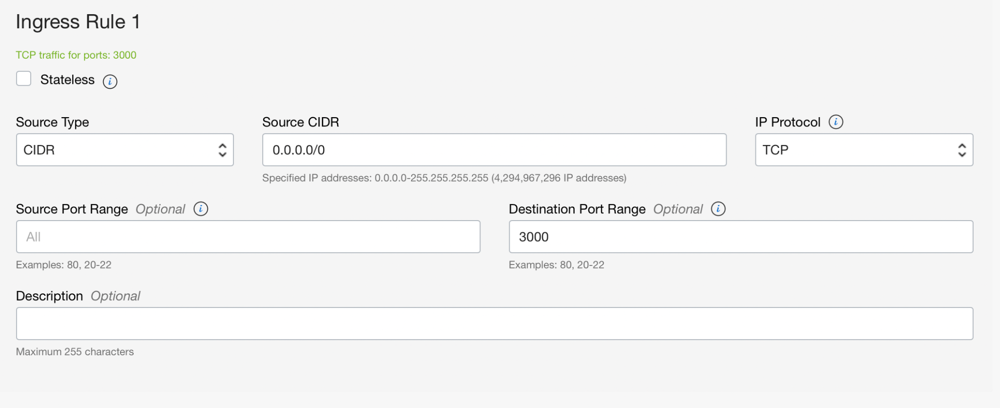
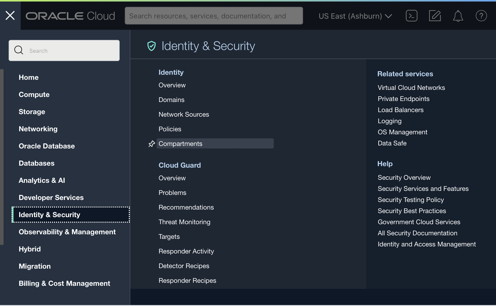
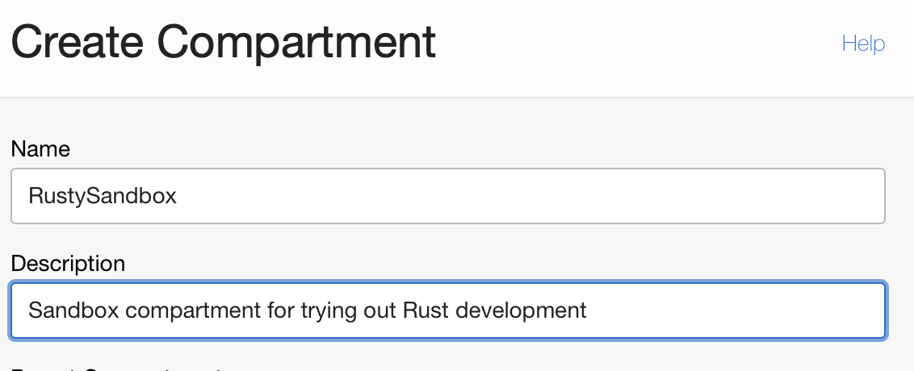
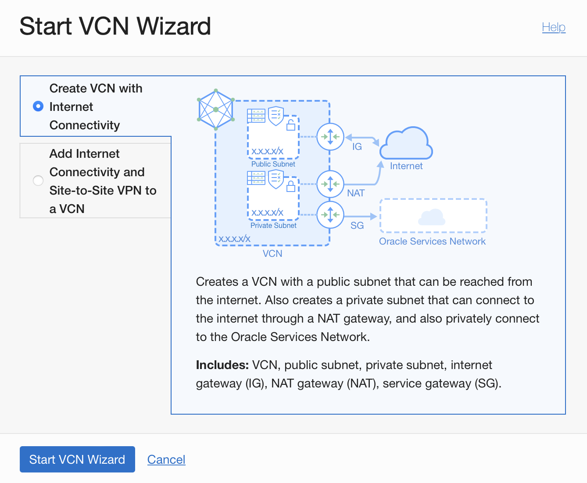
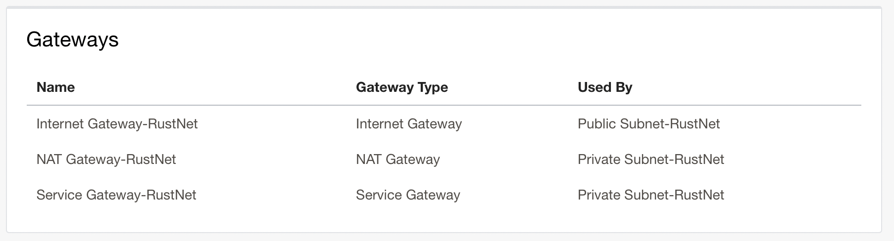
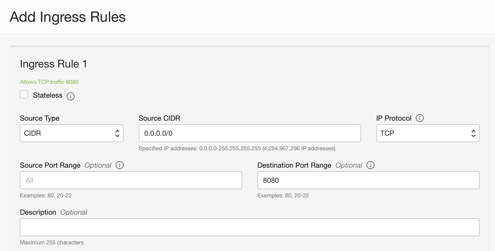

<div class="initial-content">
  <div id="main" role="main">

  <article class="page has-sidebar" itemscope itemtype="https://schema.org/CreativeWork">
    <meta itemprop="headline" content="Getting started with Rust">
    
    <meta itemprop="datePublished" content="2022-12-12T08:00:00+00:00">
    


    <header>
      <h1 id="page-title" class="page__title" itemprop="headline">Getting started with Rust
</h1>
      


    </header>

    <section class="page__content" itemprop="text">
      

        <figure class="alignleft 250 250">
              <picture>
                  <source srcset="media/image2.png 1x" />
                  
              </picture>
              <figcaption>Rust Logo</figcaption>
            </figure>
<figure class="alignleft 250 250">
              <picture>
                  <source srcset="media/image1.png 1x" />
                  
              </picture>
              <figcaption>Rust Cargo Logo</figcaption>
            </figure>
<figure class="alignleft 250 250">
              <picture>
                  <source srcset="media/image4.png 1x" />
                  
              </picture>
              <figcaption>Ferris the crab, unofficial mascot</figcaption>
            </figure>

<p>Welcome to a series of posts on “Everything you need to know about Rust.” We’ll cover a lot over the course of the next few articles. By the end, you should be comfortable with writing and deploying your own Rust project and be ready to jump into advanced topics.</p>

<p>This first article will introduce you to the motivations behind Rust, why you might use Rust, and a walkthrough of a simple Rust application deployed to Oracle Cloud Infrastructure. Later articles will cover the ecosystem and full suite of Rust tools, publishing Rust libraries (known as “crates”), and best practices and resources for becoming a Rust expert.</p>

<p>Let’s kick it off with a few fundamentals.</p>

<h2 id="what-is-rust">What Is Rust?</h2>

<p><strong>Rust</strong> is a general-purpose programming language developed</p>

<p>specifically to run blazingly fast, enforce type safety, and provide concurrency, all in an easier-to-use language than its predecessors, such as C and C++. It’s a relatively new language, with version 1.0 released in 2015.</p>

<p>Rust enforces memory safety through <a href="https://doc.rust-lang.org/book/ch04-00-understanding-ownership.html">its unique ownership system</a>, which ensures that all resources are properly initialized and cleaned up, preventing you from using a resource before it has been initialized or after it has been freed. By enforcing such strict memory guarantees, Rust programs don’t need to be garbage-collected. Rust also has <a href="https://doc.rust-lang.org/book/ch16-00-concurrency.html">strong support for multithreading</a>. In other languages, multithreading can lead to concurrency problems such as resource deadlocks. But by using the ownership system, Rust tracks and catches potential data races at <em>compile time</em>, making it much easier to write safe, concurrent code.</p>

<p>Many of Rust’s goals are closely aligned with <a href="https://www.oracle.com/cloud/why-oci/">Oracle Cloud Infrastructure (OCI)</a>, which makes the two technologies a great pair if you’re looking to provide greater security, performance, <em>and</em> flexibility to your development projects.</p>

<h2 id="why-use-rust">Why Use Rust?</h2>

<p>While Rust is definitely a general-purpose language, there are some common use cases where it truly shines.</p>

<p>First are <strong><a href="https://www.rust-lang.org/what/networking">networking</a> and <a href="https://www.rust-lang.org/what/embedded">embedded</a> devices.</strong> One of the main motivators for Rust’s development was to create a language that would be suitable for use in systems programming contexts, such as operating systems, device drivers, and embedded systems. Since well-written Rust applications have a small footprint and writing safe, concurrent code is a basic part of developing in the language, Rust is perfect for low-resource deployments that are often found in both of these spaces.</p>

<p>Next, since Rust became prominent when Mozilla sponsored it during a high point of web development, it should be no surprise that Rust has great <strong>web-related applications</strong>. Whether you need to have all the benefits of the language on the front end or back end of your web stack, you can use Rust.</p>

<ul>
  <li>For front-end functionality that needs high performance, developers often build in Rust and <a href="https://www.rust-lang.org/what/wasm">compile to WebAssembly</a> to run in a browser. With client-side code that is known to be safe, you can be more certain of success for whatever high-performance tasks you need.</li>
  <li>For back-end applications, Rust has several web frameworks, such as <a href="https://actix.rs">Actix Web</a> and <a href="https://rocket.rs">Rocket</a>, that can provide the tools and libraries you need to quickly spin up fast and secure web applications that take advantage of Rust.</li>
</ul>

<p>Finally, Rust is also great for <strong><a href="https://www.rust-lang.org/what/cli">building command-line tools</a></strong>. With its easy distribution model (via <a href="https://crates.io">crates.io</a>, its package distributor) and the ability to run on many different CPU architectures, Rust allows safety and performance without having to worry about the intricacies of its deployment environment.</p>

<h2 id="how-is-rust-different-from-javascript">How Is Rust Different from JavaScript?</h2>

<p>You may be wondering how Rust is different from JavaScript or other scripting languages. There are a few key differences to consider.</p>

<ul>
  <li>First, Rust is a statically typed language, while JavaScript is dynamically typed. This means that in Rust, you have to declare the types of variables ahead of time, while in JavaScript, you don’t need to do this.</li>
  <li>Second, Rust is compiled to native code, while JavaScript is interpreted by a virtual machine. This means that Rust programs will generally run faster than JavaScript programs, but they may take longer to compile.</li>
  <li>Finally, Rust has several features that make it more suitable for use in systems programming contexts than JavaScript. These include its focus on safety and security, its low-level control over memory management and data layout, and its support for efficient code.</li>
</ul>

<h2 id="lets-see-it-in-action">Let’s See It in Action</h2>

<p>Now that we have some background, let’s get Rust up and running on an OCI instance and see how easy it can be to get started.</p>

<p>If you don’t have an OCI account, the first step is to create one. For simplicity and ease of following along, we’ll start with <a href="https://www.oracle.com/cloud/free/">an Always Free Instance</a> and create a simple Actix web app. This app will be very similar to a demo Express.js application. It’s a single-file app that responds with a greeting on a couple of GET routes and will echo the payload sent via POST on another route.</p>

<p>Everything we use here is free, so no worries about costs.</p>

<h3 id="in-order-to-bake-a-rust-app-you-must-first-invent-a-computing-universe">In order to bake a Rust app, you must first invent a computing universe</h3>

<p>If you really wanted to go quickly, you could start by creating a bare Linux instance on OCI, install Rust, then build your Actix app. However, if you want to be able to access your app from the internet, or do more than just write to the local drive, there’s a bit more involved.</p>

<p>We’ll walk through the relevant steps below, but if you need more detailed information, check <a href="https://docs.oracle.com/en-us/iaas/Content/GSG/Reference/overviewworkflow.htm#Tutorial__Launching_Your_First_Linux_Instance">this more thorough
tutorial</a>.</p>

<h4 id="initial-setup">Initial setup</h4>

<p>Our first step is to <a href="https://docs.oracle.com/en-us/iaas/Content/GSG/Tasks/choosingcompartments.htm#Choosing_a_Compartment">choose a compartment</a> where we’ll put this sample app. If you’ve never created a compartment before, you’ll have a default “root” compartment for your account, but it’s a better idea to create a new one. We won’t be creating much for this article, but having a dedicated compartment will make cleanup easier. It’s simple to create one, so we’ll make a sandbox compartment from the Identity &amp; Security menu.</p>

<picture class="">
                <source srcset="media/image8.png 1x" />
                
            </picture>

<p><em>Choose “Compartments” from the menu for Identity &amp; Security</em></p>

<p>Once you get to the list of compartments, you can make a new one and fill in these details (or something like them), but keep the Parent Compartment set to your root compartment.</p>

<picture class="">
                <source srcset="media/image3.png 1x" />
                
            </picture>

<p>Now that you have a compartment that won’t cause problems for other things in the rest of your account, let’s get to work.</p>

<h4 id="an-internet-accessible-network">An internet accessible network</h4>

<p>In any new OCI account, you’ll start with a purely private network. This means that any resources you create will be able to talk to one another, but by default, none of them will be accessible to the rest of the internet.</p>

<p>Since we’re building a web app, that simply won’t work for our needs, so we’re going to need to create <a href="https://docs.oracle.com/en-us/iaas/Content/GSG/Tasks/creatingnetwork.htm#Creating_a_Virtual_Cloud_Network">an internet-connected Virtual Cloud Network</a>. OCI is designed to get us up and running quickly and offers just what we need through a convenient wizard on the networking page.</p>

<p>If you choose our sandbox compartment from the sidebar and click the “Start VCN Wizard” button, you’ll see something like this.</p>

<picture class="">
                <source srcset="media/image7.png 1x" />
                
            </picture>

<p>Start the wizard and pick a name for your network (e.g. RustNet or whatever you feel like). Leave the CIDR blocks and other settings alone, then click next.</p>

<picture class="">
                <source srcset="media/image5.png 1x" />
                
            </picture>

<p>You should see a number of gateways that will be created, as well as some security lists and route tables. Click create and watch OCI do its work.</p>

<p>While you’re here, open the Default Security List from the Security Lists tab and add a rule to allow traffic on port 8080 to your VNC. The settings should look like this:</p>

<picture class="">
                <source srcset="media/image6.png 1x" />
                
            </picture>

<h4 id="building-our-compute-instance">Building our compute instance</h4>

<p>Now we get to <a href="https://docs.oracle.com/en-us/iaas/Content/GSG/Tasks/launchinginstance.htm#Launching_a_Linux_Instance">make our computer</a> for building a Rust app. We’ll use the basic defaults (they’re set to use the Always Free options), and we’ll download the SSH key that’s generated with our instance. The defaults are good enough for our purposes, so once you’ve given your instance a name and have checked that your VCN is being used for this instance, just click the Create button.</p>

<p>Once your instance has been provisioned, grab the IP address and get ready to start working in the cloud!</p>

<h3 id="getting-up-and-running-with-rust">Getting up and running with Rust</h3>

<p>By default, Rust is not installed in OCI instances. However, just as OCI is designed for ease of use and setup, Rust is constantly striving for developer efficiency, and the setup process is no exception. The rustup command is designed to make setting up Rust as painless as possible.</p>

<p><a href="https://www.rust-lang.org/tools/install">Grab the installation command from the docs</a>, and run it on your OCI instance. When you see “Rust is installed now. Great!” you’re ready to go, with a full Rust tool suite installed. These tools include rustup itself, which will allow you to maintain your Rust tools in the future, rustc, which is the Rust compiler, and cargo, which serves as Rust’s package manager. Cargo has many other uses too, including making new Rust apps and libraries from scratch.</p>

<p>Make sure to check if there are any instructions to get your current shell configured properly. If there are, run those commands. If you like, you can verify that everything was installed correctly with:</p>

<div class="language-console highlighter-rouge"><div class="highlight"><pre class="highlight"><code><span class="go">rustc --version
</span></code></pre></div></div>

<p>This should give you the most recent and stable version of Rust.</p>

<h3 id="configuring-our-app">Configuring our app</h3>

<p><a href="https://actix.rs/docs/getting-started/">Getting a new Actix app going</a> is pretty straightforward. You start, as you do with many Rust projects, with:</p>

<div class="language-console highlighter-rouge"><div class="highlight"><pre class="highlight"><code><span class="go">cargo new hello-rust
</span></code></pre></div></div>

<p><strong>Cargo</strong> is Rust’s dependency and app manager. It’s very similar to npm
for Node, Ruby’s bundler tool, or PyPI for Python. In our case, it only
creates a couple things for us. In a new directory called hello-rust,
Cargo will have created the following structure:</p>

<div class="language-plaintext highlighter-rouge"><div class="highlight"><pre class="highlight"><code>hello-rust\
├── Cargo.toml\
└── src\
└── main.rs
</code></pre></div></div>

<p>In Rust, packages are called crates. The Cargo.toml file serves as a package manifest) and the src/main.rs file is our main source file. We won’t need anything other than these two files for our Actix app.</p>

<p>In the Cargo.toml file, add the following line to the [dependencies] section:</p>

<div class="language-plaintext highlighter-rouge"><div class="highlight"><pre class="highlight"><code>[dependencies]
actix-web = "4"
</code></pre></div></div>

<p>Save your Cargo file and open the src/main.rs file. Replace what’s there with:</p>

<div class="language-rust highlighter-rouge"><div class="highlight"><pre class="highlight"><code><span class="k">use</span> <span class="nn">actix_web</span><span class="p">::{</span><span class="n">get</span><span class="p">,</span> <span class="n">post</span><span class="p">,</span> <span class="n">web</span><span class="p">,</span> <span class="n">App</span><span class="p">,</span> <span class="n">HttpResponse</span><span class="p">,</span> <span class="n">HttpServer</span><span class="p">,</span> <span class="n">Responder</span><span class="p">};</span>

<span class="nd">#[get(</span><span class="s">"/"</span><span class="nd">)]</span>
<span class="k">async</span> <span class="k">fn</span> <span class="nf">hello</span><span class="p">()</span> <span class="k">-&gt;</span> <span class="k">impl</span> <span class="n">Responder</span> <span class="p">{</span>
    <span class="nn">HttpResponse</span><span class="p">::</span><span class="nf">Ok</span><span class="p">()</span><span class="nf">.body</span><span class="p">(</span><span class="s">"Hello, Rust!"</span><span class="p">)</span>
<span class="p">}</span>

<span class="nd">#[post(</span><span class="s">"/echo"</span><span class="nd">)]</span>
<span class="k">async</span> <span class="k">fn</span> <span class="nf">echo</span><span class="p">(</span><span class="n">req_body</span><span class="p">:</span> <span class="nb">String</span><span class="p">)</span> <span class="k">-&gt;</span> <span class="k">impl</span> <span class="n">Responder</span> <span class="p">{</span>
    <span class="nn">HttpResponse</span><span class="p">::</span><span class="nf">Ok</span><span class="p">()</span><span class="nf">.body</span><span class="p">(</span><span class="n">req_body</span><span class="p">)</span><span class="err">\</span>
<span class="p">}</span>

<span class="k">async</span> <span class="k">fn</span> <span class="nf">manual_hello</span><span class="p">()</span> <span class="k">-&gt;</span> <span class="k">impl</span> <span class="n">Responder</span> <span class="p">{</span>
    <span class="nn">HttpResponse</span><span class="p">::</span><span class="nf">Ok</span><span class="p">()</span><span class="nf">.body</span><span class="p">(</span><span class="s">"Hey there!"</span><span class="p">)</span>
<span class="p">}</span>

<span class="nd">#[actix_web::main]</span>
<span class="k">async</span> <span class="k">fn</span> <span class="nf">main</span><span class="p">()</span> <span class="k">-&gt;</span> <span class="nn">std</span><span class="p">::</span><span class="nn">io</span><span class="p">::</span><span class="nb">Result</span><span class="o">&lt;</span><span class="p">()</span><span class="o">&gt;</span> <span class="p">{</span>
    <span class="nn">HttpServer</span><span class="p">::</span><span class="nf">new</span><span class="p">(||</span> <span class="p">{</span>
        <span class="nn">App</span><span class="p">::</span><span class="nf">new</span><span class="p">()</span>
            <span class="nf">.service</span><span class="p">(</span><span class="n">hello</span><span class="p">)</span>
            <span class="nf">.service</span><span class="p">(</span><span class="n">echo</span><span class="p">)</span>
            <span class="nf">.route</span><span class="p">(</span><span class="s">"/hey"</span><span class="p">,</span> <span class="nn">web</span><span class="p">::</span><span class="nf">get</span><span class="p">()</span><span class="nf">.to</span><span class="p">(</span><span class="n">manual_hello</span><span class="p">))</span>
    <span class="p">})</span>
    <span class="nf">.bind</span><span class="p">((</span><span class="s">"0.0.0.0"</span><span class="p">,</span> <span class="mi">8080</span><span class="p">))</span><span class="o">?</span>
    <span class="nf">.run</span><span class="p">()</span>
    <span class="k">.await</span>
<span class="p">}</span>
</code></pre></div></div>

<p>This might feel like a lot, but with just the actix-web dependency and these few lines of code, we now have a fully functioning Rust web app.</p>

<p>This code, in the main function, is building an HTTP server that attaches to port 8080 of your instance. That server has two “services”</p>

<p>defined as asynchronous functions which will respond with a greeting at the root route with a GET or echo back a response at the /echo route. We’ve also established a third route manually with the .route call for the manual_hello function. Because all of these are defined using the async keyword, the app can respond to multiple requests at once as long as there are threads available. What’s nice is that we know the app is not going to have any memory safety issues because it compiles without errors.</p>

<p>We’ve already opened a rule on our network to allow traffic over port 8080, but we also need to open port 8080 in our firewall to allow traffic through, so run these two commands:</p>

<div class="language-console highlighter-rouge"><div class="highlight"><pre class="highlight"><code><span class="gp">$</span><span class="w"> </span><span class="nb">sudo </span>firewall-cmd <span class="nt">--permanent</span> <span class="nt">--zone</span><span class="o">=</span>public <span class="nt">--add-port</span><span class="o">=</span>8080/tcp
<span class="gp">$</span><span class="w"> </span><span class="nb">sudo </span>firewall-cmd <span class="nt">--reload</span>
</code></pre></div></div>

<p>Return to the root of your app and run:</p>

<div class="language-console highlighter-rouge"><div class="highlight"><pre class="highlight"><code><span class="gp">$</span><span class="w"> </span>cargo run
</code></pre></div></div>

<p>Once you do, your application will build and start running.</p>

<p>If you grab the IP address of your instance and append port 8080, you should be able to get a “Hello, Rust!” from your browser. If you’d like to be a little more adventurous, you could send a POST to the /echo endpoint and get the request body you send echoed back. We’ve also manually set up a special hello at the /hey route. All of this in under 30 lines of Rust!</p>

<h1 id="conclusion">Conclusion</h1>

<p>There’s a lot more to learn, but hopefully you can see the power and ease of using Rust and OCI together. Future articles will dive deeper into Rust and the ecosystem. In the meantime, you might also enjoy getting a taste of what Rust can do by checking out <a href="https://doc.rust-lang.org/book/title-page.html">The Rust Programming Language</a>, affectionately referred to by Rust programmers as “The Book.” Alternatively, you can keep poking around with some of <a href="https://docs.oracle.com/en-us/iaas/Content/GSG/Concepts/baremetalintro.htm">the amazing things you can do on OCI</a> with the free trial credits you got for creating a new Oracle Cloud account.</p>


          <div class="sidebar sticky">
    <!-- <p><strong>Tags:</strong> <span class="tags">

            
            <a class="animated-link tag" href="/topics/open-source">open-source</a>
            <a class="animated-link tag" href="/topics/devops">devops</a>
            <a class="animated-link tag" href="/topics/get-started">get-started</a>
            <a class="animated-link tag" href="/topics/back-end">back-end</a>
            <a class="animated-link tag" href="/topics/rust">rust</a>
            </span>
    </p> -->
  


<div itemscope itemtype="https://schema.org/Person">

  

  <div class="author__content">
    
      <h3 class="author__name" itemprop="name">Oracle Developers</h3>
    
    
  </div>

  <div class="author__urls-wrapper">
    <ul class="author__urls social-icons">
      

      

      

      

      

      

      

      

      

      

      

      

      
        <li>
          <a href="https://github.com/oracle-devrel" itemprop="sameAs" rel="nofollow noopener noreferrer">
            <i class="fab fa-fw fa-github" aria-hidden="true"></i><span class="label">GitHub</span>
          </a>
        </li>
      

      

      

      

      

      

      

      

      

      

      

      

      

      

      
    </ul>
  </div>
</div>

  
  
  

  </div>


      </section>

      <footer class="page__meta">
        
        


        

  <p class="page__date"><strong><i class="fas fa-fw fa-calendar-alt" aria-hidden="true"></i> Updated:</strong> <time datetime="2022-12-12T08:00:00+00:00">December 12, 2022</time></p>


      </footer>
    </div>

  </article>
</div>

</div>

